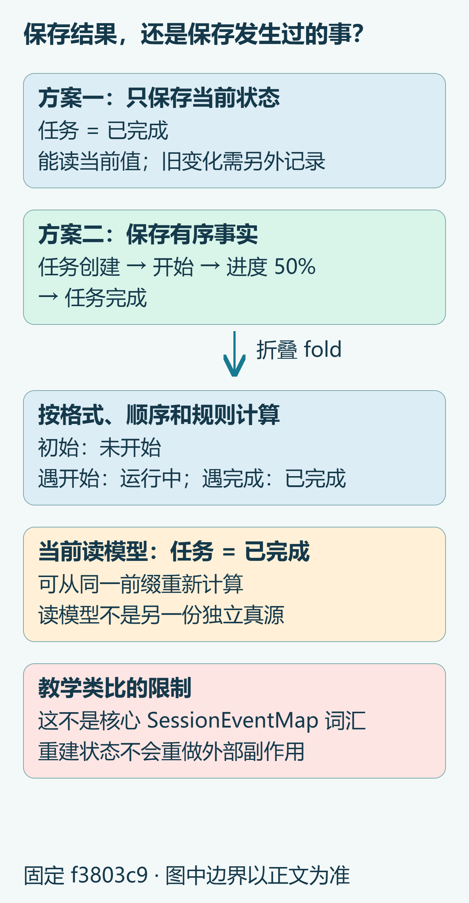
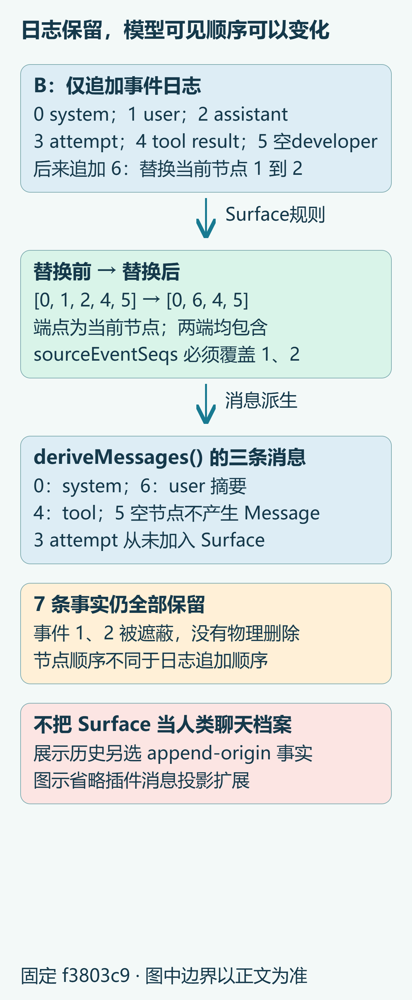
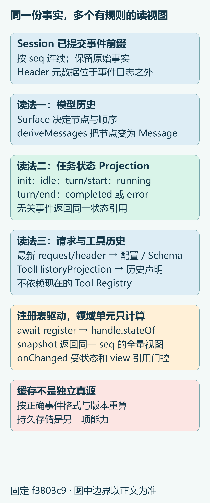
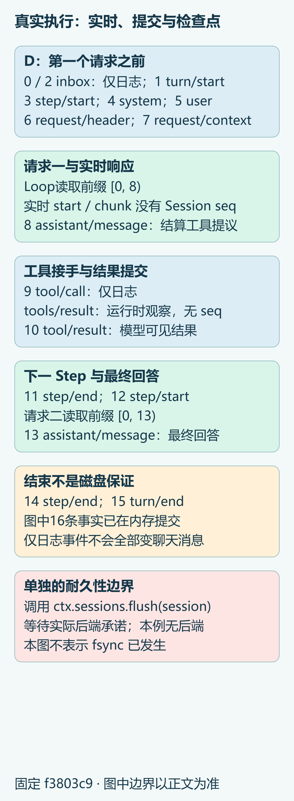

H17 作者审阅页 · 未发布。实际 LessonMarkdown 的静态渲染，折叠答案可展开；课程版本的复制交互已另经 React 挂载测试。图片在本页映射为相邻文件，不改变教材的 /course-media 路径。
Session Event Sourcing：Agent 的历史为何可以重建？
210～280 分钟（分三段：事实与顺序55～75、Surface与请求70～90、Projection与推理85～115；作者估算，环境另计，待试读）
聊天界面留下的东西，够解释这次执行吗？
代码研究 Agent 收到：“读取 README，检查测试文件，再汇总项目结构。”它开始一个 Turn，在 Step 中请求工具，拿到结果后继续回答，最后结束 Turn。假设我们只保存界面上最终的消息列表。
明天同事问：模型最初请求了什么参数？哪一 Step 产生回答？有一次请求失败后是否重试？工具调用有没有对应结果？界面隐藏的旧内容是否已经消失？能否证明模型输入来自当时已记录的事实？一个只有“用户问、助手答”的数组，很难独自回答这些问题。
H10教过执行循环，H12教过输出结算，H14教过工具结果；今天改变观察方向：执行过的事实怎样成为可以重新计算的历史？ 最终产物是一张你能手工推导、再用真实组件核对的事件表，而不是一段背熟的 Event Sourcing 定义。
固定官方 Commit 为 f3803c96974ad4a94195fb97e5c637e9c2a3afe3。本课只研究事件、Surface、模型历史与基础 Projection。所有运行实验使用内存 Session、受控 Adapter 和常量工具，零模型费用。持久化后端、恢复、Fork 与崩溃修复留H18，压缩策略留H19，完整取消与重试策略留H20。
蓝图估100～140分钟；正式稿加入四项真实组件实践、综合推理和失败反例，作者估210～280分钟，增加110～140分钟，尚无学员实测。建议第一段做到事件顺序暂停，第二段手算完Surface与请求暂停，第三段再运行投影和综合实验。折叠区保留完整可复制程序，不要求一次通读。
先把“当前值”和“发生过的事”拆开
一个待办项当前是“已完成”。传统保存方法可以更新一行 status = completed。这足够回答现在是什么，却不能仅凭这一行知道它什么时候开始、进度怎样变化。
教学简化：先记录“任务创建、任务开始、进度更新为50%、任务完成”四个事实。令初始状态为未开始，按顺序每读一个事件就更新一次计算结果，最后得到已完成。这个过程叫折叠（fold）：上一步状态加下一条事件，算出下一步状态。
事件溯源（Event Sourcing）把这些有顺序的事实作为重建状态的权威输入，当前值成为计算结果。它解决的是“只剩结果，解释不了变化”的缺口。普通调试日志可能缺字段、乱格式或被采样；这里的事件必须有可解释的格式、顺序及折叠规则。保存一串自然语言，并不会自动获得可重建性。
先预测：如果只保留完成状态，能否证明出现过50%的进度？如果四条事件齐全，但把完成事件的含义改成“失败”，同一数据还能按旧规则解释吗？两问分别检验事实是否保留、解释规则是否一致。

银行流水也能帮助理解余额与事实的区别，但这个类比不能推出金融级事务保证。日志记下“已经发送邮件”，重新折叠可以恢复“邮件已发送”的状态；重新发送邮件是另一项外部动作，需要另行判断幂等与授权。
从 H09 的两个生命周期回到 Session
先做7分钟自足回顾：H03把请求串到模型和工具；H09区分运行 Agent 与 Session 历史；H10用 Turn/Step 标记边界；H11把系统文本、消息和调用配置组装成请求；H12把实时输出结算成事实；H14把工具提议、运行时结果与 Session结果分开。旧Stage 4的Run/Step表也保存执行事实，但它不是Harness的同名实现。有原课权限者可选复习Run与Step持久化，本课无需该权限。
Session拥有会话的事件日志及其派生读模型，本身不调用模型。SessionStore是 ctx.sessions，管理当前活跃的Session对象，并为它们接上创建、事件和释放通知。Agent使用Session推进一次工作；Agent不是Session，活跃Store也不是所有持久历史的目录。没有活跃Agent，只能说明当前运行对象不在，不能据此断言磁盘历史不存在；反过来，纯内存Session退出也没有凭空落盘。见Session / Session.create与SessionStore.create / prepare。
const ctx = new Context();
await ctx.plugin(SessionStore);
const session = ctx.sessions.create(SessionId('project-study'));
ctx.sessions.get(session.id) === session; // true
session.seq === 0; // 创建元数据不占事件位置这是正式API的小片段，完整接线见公共准备程序。create完成登记和创建公告后才允许写入；prepare只构造未发布对象，不能拿来随意追加。H09的Agent工厂会把Session与Agent的资源归属组合起来，本课不再展开整套创建事务。实践A及membership测试会对照“存在一个对象”和“允许追加”的差别。
SessionId标识某一个会话；SessionHeader保存格式版本、会话ID、创建时间和可选工作目录等不可变元数据，位于事件日志之外。不要把Header算作seq=0的普通事件，也不要把这里的Session等同网站登录会话。见SessionHeader。
事件不是一排普通聊天消息
先看SessionEventMap中的SessionEventMap，再看SessionEvent信封。一个事件至少包含 type、seq、time 和 data；可选的 ignorable 与条件性的Surface元数据有各自约束。seq描述位置，data承载该类型的事实，time不能替代顺序号排序。
| 教学分组 | 真实事件类型 | 产生普通模型Message吗？ |
|---|---|---|
| 生命周期边界 | turn/start、turn/end、step/start、step/end | 不产生；描述何时进入或离开 |
| 消息来源 | user/message、system/message、developer/message、assistant/message | 属于Surface候选；还要按节点与空内容规则派生 |
| 工具提议与结果 | tool/call、tool/result | call仅日志；result属于Surface候选 |
| 请求配置与路由 | request/header、request/context | 都不直接产生Message |
| 尝试诊断 | assistant/attempt | 不产生正常Assistant消息 |
这只是教学分组，并非全部词汇清单。真实Loop还会记录agent/inbox/spliced等其他插件事件；综合夹具则只挑本课需要的类型。完整目录见持久化事件目录。不能因某事件不在上表就默认它无关，也不能遇未知的必需事件时静默跳过继续重建。
user/message可能来自人的输入，也可能来自插件注入；role描述模型消息角色，source记录来源。插件提供的是user角色上下文，并不变成人类授权。tool/result则是一等tool角色消息，以toolCallId关联调用，而不是把结果随意贴成Assistant说的话。工具规范value、模型content与展示meta的区别沿用H14，不假定日志保存了运行时结果的所有字段。
同一个数字，为什么要区分 Seq 和 Offset？
一份日志有4条事件时，现有位置是0、1、2、3，长度是4。SessionSeq(3)可以表示最后一条事件；SessionLogOffset(4)可以表示读到结尾的边界。半开区间 [0, 4)恰好包含这4条。session.seq的公开类型是Offset，表示下一次追加的位置，也就是当前长度；它不是“当前最后一条事件”。见SessionSeq / SessionLogOffset / Cursor。
品牌化数字类型就像给相同数字贴上用途标签，让TypeScript阻止把长度误当已有位置。运行时构造函数仍返回数字，并拒绝负数、负零、小数和非安全整数；它们本身不知道某个具体日志是否真的有该位置，因此SessionSeq(4)构造成功也不证明4在这份四条日志里存在。
SessionSeqCursor允许 -1，表示空日志还没有任何事件；OptionalSessionSeq用 null表示没有某个可选事件位置。不要拿两种空值交换使用。一个前缀长度为3时包含seq0、1、2；将来Fork若使用“包含到某个Seq”的接口，还要正确换算长度。本课只建立数的语义，H18才处理完整Fork边界。
append 到底先做什么？
阅读Session.append及publicationEntry / commit，按输入、处理、提交、失败四步追，而不是把“追加一条数据”想成 array.push。
输入是事件类型、对应载荷，以及消息事件必需的Surface意图。Session先检查当前对象是否允许写入，再用一次无损JSON读取/复制过程生成载荷和Surface元数据快照；之后再次检查归属，构造带连续Seq和time的深冻结事件，执行局部事件校验。
提交阶段先调用SurfaceManager.validateNext规划并验证下一次Surface变化，接着解析观察者列表。以上都成功后才push进私有日志；此时事件已提交。随后调用session/event观察者，逐监听者容纳失败。观察者失败不会把已提交事件倒回去，也不会让后面的监听者错过它。接受/发布期间的重入append会被拒绝。
这里不能画成“先修改所有派生状态，再发布”。 SurfaceManager先验证计划，提交后的访问会应用该计划；消息、请求头和工具历史含增量缓存，在相应读取时推进。SessionProjectionRegistry则订阅session/event驱动自己的业务折叠。日志提交是共同边界，具体缓存何时计算由各读模型负责。图与蓝图概括的精度差异在源码清单中登记。
事件载荷必须无损地表示成JSON值。undefined、BigInt、NaN、Infinity、负零、函数、Symbol、稀疏数组、循环引用、Date/Map等均不能悄悄被JSON.stringify改写后存入。实践A逐个拒绝这些值，并检查长度、观察事件、Surface和派生消息都未改变。输入是快照，调用方以后改原对象也不能改写日志；事件本身深冻结。见snapshotJsonValue。
还要看清校验强度：Session做无损JSON、相关字段一致性与Surface约束，并不在append中运行每种事件所有嵌套字段的完整持久化Schema。教学代码使用官方类型与构造函数；运行时乱造一个“看起来可JSON”的载荷，不能据此推论它符合整个历史格式。
session/event是提交后的通知，函数返回也只证明当前Session接纳了事件。它们还没有证明磁盘数据已经达到某个耐久检查点。flush稍后专门对照。
Surface：当前模型需要看哪几条？
Session Surface解决“事实全部保留，但模型当前不必看到全部内容”的问题。把它理解为一列有顺序的事件Seq：它引用日志中的消息来源，不复制出另一套可自由改写的权威聊天记录。
本版本的SurfaceEventType有五类：system/message、developer/message、user/message、assistant/message、tool/result。每条必须声明怎样进入Surface。surfaceOp: 'append'进入尾部；replace对象把当前Surface中一段节点替换成新事件节点。见SurfaceEventType / SurfaceOp / SurfaceIntent与isSurfaceEligibleType / isSurfaceEvent。
先手算实践B的第一次替换：
| Seq | 类型/内容 | 初始Surface？ |
|---|---|---|
| 0 | system/message：只根据材料回答 | 是 |
| 1 | user/message：README原文很长 | 是 |
| 2 | assistant/message：先检查文件 | 是 |
| 3 | assistant/attempt | 否 |
| 4 | tool/result：README有src和tests | 是 |
| 5 | 空developer/message | 是，但不产生Message |
| 6 | 注入的user/message摘要，替换1到2 | 后来进入替换位置 |
替换前节点是 [0,1,2,4,5]；新事件6使用 startSeq=1,endSeq=2,sourceEventSeqs=[1,2]，替换后为 [0,6,4,5]。日志条数从6变7，原来的1和2仍在；变化的是模型当前读的节点。先写下你预计的Message数量，再看下一节。

替换端点不是任意数组下标，也不是日志的数值闭区间筛选。两个端点都要是当前Surface节点，按当前节点先后定位，范围包含两端；sourceEventSeqs必须覆盖全部被遮蔽节点，且引用唯一、已存在的更早事实。已经被遮蔽的1和2不能再充当当前端点。见replacementRange与assertSourceEventReferences。
第二次替换尤其值得预测：当前 [0,6,4,5]中，startSeq=6,endSeq=4是否非法？它在Surface里恰好前后相邻，所以引用齐全时合法，尽管6大于4。换成start=4,end=6则位置颠倒。实践B会运行这两个方向，禁止用数字排序代替节点顺序。
还有两项保护不能省略：如果Surface第0节点是system/message，覆盖它的替换只能是另一条system/message且只覆盖它；tool/result作为替换事件时，只能改写当前一条tool/result的content，其余调用身份、错误事实等必须一致。assistant/message不能携带sourceEventSeqs，因而不能拿来覆盖需要源引用的非空区间。见assertSystemHeadRewrite与assertToolResultRewrite。这些规则不等于官方保证你随意选择的范围在业务上都合理；H19再讲压缩选择策略与配对保护。
deriveMessages：从节点到真正的 Message
Session.deriveMessages / deriveEventMessage按Surface顺序读取每个来源事件，再交给deriveEventMessage。对照deriveEventMessage：user/message直接派生其数据；system/developer/assistant取data.message，空content时返回null；tool/result取其tool消息；其他类型返回null。不要把“Surface节点数”和“模型Message数”当同一个数。
因此上例替换后有4个节点，却只有3条Message：system的0、注入user摘要的6、tool结果的4。5保留一个空developer节点而不产出消息，3从未进入Surface。user消息的空content并没有被该函数一律过滤；本课额外测试会对照这项类型差别，不能把空规则扩成所有消息。
Message的role、source、content各有用途：role决定对话角色，source解释是谁提供，content是内容块列表。Assistant的tool-call块在assistant/message内；tool/call事件本身并不再增加一条Assistant消息。若你把两者都塞进模型历史，工具提议就会被错误复制两次。
deriveMessages()每次返回新数组，后续追加不会长到你已持有的数组里。内部Message对象可以共享，但深冻结。你pop返回数组不改日志；直接改其中消息会失败。Surface内容代次变化会让缓存重建，纯尾部增长可以只派生新节点。
有插件消息投影时，实例方法会应用已提交解释器；离线deriveEventMessage如果只接事件、没接同一前缀foldSurface的projectedMessages，可能只读原始内容。本课主实践没有挂插件消息投影，不把它与下一节的业务Projection混成一个扩展点。
Surface也不是完整人类聊天档案：模型用摘要覆盖旧内容，不表示人类看到的旧对话应该消失。官方的isAppendSurfaceEvent可识别append-origin来源供展示选择；replace副本通常是模型侧材料。见isAppendSurfaceEvent / isReplacementSurfaceEvent。实际产品还需依据自己的展示规则，本课不实现完整会话UI。
assistant/message 与 assistant/attempt：见过草稿不等于提交了回答
H12的实时chunk先经过组装和结算。assistant/message表示已经成功形成可用于历史的消息，携带紧凑Assistant Stream，可能带usage。部分本地取消会按实际条件保留安全的text/reasoning前缀，写成带interrupted的message；它不能被概括成“仅完整正常回答才有message”。见ReactLoopAgent.step / live.settle。
assistant/attempt保存到达结算边界、却未形成正常Surface消息的尝试及其紧凑流。失败草稿、终态和时间边界仍有诊断价值，却不该自动成为下次模型的Assistant陈述。实践D_failure实际得到attempt，deriveMessages中Assistant消息为0。
更早的硬中断或结算被拒绝时，也可能没有持久attempt事实。本课D_rejected保留实时帧，但同时拒绝两类Assistant追加；结果没有对应Session消息或attempt，实时end为abandoned。它验证的是结算失败边界，没有模拟真实断电或证明所有硬中断路径。正常committed帧必须关联实际已接受的seq；append成功仍只到内存边界。完整Stream展开复用H12，不在这里重讲组装器。
请求重建还缺什么？
模型输入不仅有messages，还包含provider/model、调用参数和工具Schema。只有文本列表，无法回答当时选择了哪一模型、哪一版工具定义。
request/header记录完整EpochHeader快照。canonicalHeader把空tools与空adapterDefaults规范成缺省字段；直接append空tools等非规范形态会被拒绝。foldRequestHeader按顺序保留最新完整快照，而不是把各条配置随意深合并。新快照没有temperature时，旧temperature不会残留。见canonicalHeader与foldRequestHeader。
Loop第一次请求记录initial；已有日志上的新Loop首次请求可能记resume；后续头变化记录change；新的消息系列或Surface内容变化也可能要求series记录。配置没变时，下一请求可以继承已记录快照，不必每Step重复写一份。实践D有两次请求而只有一条request/header，第二次按同一基线重建。见ReactLoopAgent.buildRequest。
System Prompt不在header.system字符串里。本版本它属于Surface上的system/message，随messages派生。request/context另记路由容量、systemPromptUpdate等元数据，不产生Message，也不参与header相等与请求头折叠；请求准入用绑定的prepared call能力，不能用过去的context快照代替当前能力。见ReactLoopAgent.buildRequest requestContext。
工具声明尤其要保存历史。今天Registry里的read工具可能已卸载或变了description；若昨天模型见到的定义只靠今天Registry查询，就可能解释错历史。ToolHistoryProjection从request/header和developer/message折叠，新增工具通过headerSeq解析当时完整Schema，删除不抹掉早先已记录定义。见ToolHistoryProjection。本课historical tools测试先加入、再移除、再改变调用方对象，重建仍得到旧定义；它不要求把工具执行函数放进JSON日志。
还要区分Loop请求和Adapter实际请求。Runtime可按绑定能力继续投影工具更新、图片或文件。本课每次保存Loop边界与Adapter输入，重建目标先是Loop已记录的消息与封装；本夹具无附件、无动态更新，所以实际第二请求消息也相等。这不证明任意Adapter内部都不再转换。
Projection：同一份事实怎样给出任务当前状态？
现在会话侧栏需要显示“当前任务运行中”。我们无需维护一张可以独立任意改状态的第二真源，而是定义另一个折叠规则：初始idle；遇turn/start变running并记录turn；遇turn/end按结局变completed/error并增加finished；其他事件原样返回状态。这里的“任务”是教学读模型，一Turn暂映射一次任务，不代表官方Todo领域服务的完整语义。
输入 [turn/start,step/start,step/end,turn/end(completed)]经过该规则得到 {status:'completed',turn:1,finished:1}。这就是Session Projection：按领域规则把会话事件折叠成当前值。它与Surface的模型消息选择是两个读法。见ProjectionDefinition。
ProjectionDefinition声明init、同步apply、stateSchema、stateVersion及可选wire。init定义空日志和会话元数据下的初态；apply只做纯同步计算，不能在里面发HTTP再等返回，否则同一seq时刻的多个读模型可能看到不同进度。想获取外部事实，应由别的执行路径记录事件，再折叠它。
无关事件必须返回原状态引用。这个要求影响通知，不只是代码风格：注册表用Object.is判断状态有没有变化，wire.view的原始输出再用引用比较抑制下游工作。每次都复制一个内容相同的对象，会制造不必要的更新；返回一个被原地改过的旧对象，又可能让变化没有通知。实践C同时检查值和引用，按新对象更新有关状态。
const handle = await ctx.sessionProjections.register(taskDefinition);
const state = handle.stateOf(session);
const snapshot = ctx.sessionProjections.snapshot(session);
// snapshot.asOfSeq 是最后已覆盖事件；空日志为 -1。
// snapshot.values 是已注册、具备 wire 的完整客户端值。先await注册，再通过handle读取。不要新增已弃用的registry.stateOf(session,key)。onChanged给出会话、key、全量value及seq；dispose让该注册退出全局快照与通知。已经保留的handle仍能用原单元读取后续事件，不能误教成注销后reader必然失效。见SessionProjectionRegistry.register / acquire至ProjectionHandle。
stateVersion用于缓存解释规则的兼容性；同key同时注册不同版本会拒绝共享。stateSchema主要验证存储状态进入折叠的形状，不是每次live apply都自动全面校验。C只用内存构造的checkpoint行调用viewCheckpoint，观察版本不匹配或状态Schema不合法的行不输出该key；它没有读写真实磁盘缓存。wire.viewSchema则验证离开host的视图。复杂缓存加载、恢复与尾部计算留H18。见viewCheckpoint。

| 对象/操作 | 它回答的问题 | 权威边界 |
|---|---|---|
| Session Event Log | 已经提交过什么事实？ | 读模型共同的事实来源；这里是概念名称，不是新造的导出类 |
| SessionSurface | 当前模型消息来源有哪些、顺序怎样？ | 从日志折叠；替换不物理删日志 |
| deriveMessages | 这些来源最终形成哪些Message？ | 依节点、内容与解释器派生 |
| SessionProjection | 某领域当前状态是什么？ | init/apply及版本规则下的结果 |
| Session Persistence | 哪些事件已可靠存储？ | 独立后端与耐久性承诺 |
这张表解释本课最后的问题：多份读模型可以各有缓存、布局和用途，但不需要多份互相独立的权威事实。重建时必须使用相同事件前缀、正确格式和解释规则；不能只说“同一日志”就忽略版本与插件定义。
一次真实 Agent 的提交时间线
实践D实际挂载Cordis、SessionStore、ProjectionRegistry、SystemPrompt、LlmRuntime、AgentRegistry、AgentLoop、ToolsService与Native执行器。模型是脚本Adapter；工具只返回内存中的“src/与tests/”，不读文件、不运行命令。

| 位置 | 事实或观察 | 在下一份模型历史中的作用 |
|---|---|---|
| seq0/2 | agent/inbox/spliced | 队列事实，仅日志 |
| seq1、3 | turn/start、step/start | 边界，仅日志 |
| seq4/5 | system/message、user/message | 第一请求的两条消息 |
| seq6/7 | request/header、request/context | 配置与路由事实，不是Message |
| seq8 | assistant/message含readme工具块 | 后续请求中的Assistant提议 |
| seq9 | tool/call | 调度接手记录，不能单凭它证明主体成功 |
| 无seq | tools/result | 运行时观察，在提交结果前 |
| seq10 | tool/result | toolCallId=readme，引用seq9 |
| seq11/12 | step/end、下一step/start | 第二请求前的执行边界 |
| seq13～15 | 最终assistant/message、step/end、turn/end | 回答成为历史，Turn关闭 |
第二请求读取到seq12为止的13条事实，但只有system、user、assistant、tool四条Message。seq13的最终回答不可能已经出现在产生它的请求里。测试在每次llm/stream边界截取当时的已提交事件，再由第二个真实Session核对messages、config、tools和toolHistory，避免拿最终日志倒推过去请求而不切前缀。
重建Session的构造器会追加一个session/end-seed标记，它只属于重建实例，不属于原事件前缀。这个标记不产生Message；比较原始条数时必须分开。我们只用它重建读模型，不调用resume或fork，不给重建对象执行工具。
Flush：内存接受与耐久检查点之间
Session.append成功后，session/event发布的是已接受事实；存储插件可据此缓冲。需要耐久检查点时，调用 await ctx.sessions.flush(session)，由Store统一找到所属通知载体，等待全部session/flush监听者settle；若有失败，全部等待后抛出按注册顺序找到的首个失败。无监听者返回false，有监听者成功返回true。见SessionStore.flush与session/event / session/flush。
这个布尔值也不是“磁盘fsync认证”。后端挂了什么、承诺何种耐久性，才决定flush究竟保证什么。实践A先无后端调用得到false，后来只加一个计数监听器得到true；计数器明确不是存储。该反例防止把“调用过API”误当“崩溃后可读”。
Loop不在每个turn/end处自动等待flush；请求前的检查点策略另有所有者。本课D没有挂它与持久后端，所以whenIdle只供观察工作空闲，不能拿来证明磁盘最新。SessionHandle、JSONL、单写者、跨进程与损坏日志恢复都留H18。
能够重建的是确实已记录且按需要持久保存的事实与读模型。已经消失的进程、未记录的瞬态变量、第三方实时连接、未结算模型流、当前OS权限，都不能从文本日志里变回来。外部工具已发生但结果未知时，缺result更不能推出“没有副作用，可以重做”。
五个核心文件：每读一站交一个结果
前面的链接用于核对局部事实，不要求逐个包通读。第一次阅读按这五站走；每站先画输入、提交边界与输出，再运行对应实践：
session/src/types.ts：先看SessionHeader、Seq/Offset和EventMap，写一张“元数据／消息来源／仅日志”分类表；用A检查Header不占位置。session/src/index.ts：精读append、commit、deriveMessages及Store.flush，圈出哪些失败发生在push前、哪些等待属于后端；不要把函数返回画成磁盘同步。session/src/surface.ts：从deriveEventMessage走到替换范围和来源校验，手算B的[0,6,4,5]与反向端点；区分当前节点顺序和日志数字顺序。session-projection/src/index.ts：先读ProjectionDefinition，再看register、snapshot和viewCheckpoint，用C交出状态、引用及通知三列，不通读缓存恢复算法。agent-loop/src/agent.ts：只追step的请求构造、message/attempt结算与工具结果后续请求，用D标出两份事件截止前缀；H12的流组装与H14的工具策略作为已知边界。
这些名称均指本课已链接的固定版本文件；包前缀分别为packages/core/或packages/session/。tool-history、无损JSON工具函数、官方文档和测试是辅助核对材料；复杂持久化、恢复与Fork留H18。合上源码能交出上述五份结果，再进入完整程序，避免把链接数量误当必读文件数量。
实验准备：先预测，再运行，再对照
本仓库根运行环境为Node24、Python与现有作者依赖；官方源码通过HARNESS_SOURCE_CACHE与HARNESS_GIT_CACHE定位固定Commit，隔离依赖由H17_DEPS_ANCHOR和H17_ZOD_ANCHOR定位。完整树的版本和integrity必须对齐上游pnpm-lock，不往业务项目安装Harness依赖。换机接线与命令见本课lab/README及作者README；不要求联网模型或个人Harness Home。
python -X utf8 docs/deepseek-harness-v2/h17/scripts/check-sources.py
node docs/deepseek-harness-v2/h17/scripts/run-labs.mjsrunner会把这些随课文件复制到新的临时目录，在该处接入固定源码paths，保留原始stdout/stderr、退出值与程序hash。失败记录也保留。输出在H17的evidence目录，不覆盖output与前课。没有递归清理命令，临时目录保留。
下面是共用程序；理解公共fixture如何在创建前订阅session/event即可，完整长代码可待运行时展开。它只收集新建内存Session的提交，不是持久化后端，也不使用新增的弃用同步读取调用。
想深入再看：依赖接线完整程序
// Node 24；隔离依赖完整树由 run-labs.mjs 在运行前核对固定上游 lock。
import { registerHooks, createRequire } from 'node:module';
import { pathToFileURL } from 'node:url';
const dep = createRequire(pathToFileURL(process.env.H17_DEPS_ANCHOR));
const zod = createRequire(pathToFileURL(process.env.H17_ZOD_ANCHOR));
const entries = new Map(['js-yaml','@eslint-community/regexpp','ajv','node-addon-require-builtin','resolve.exports','semver']
.map(name => [name,pathToFileURL(dep.resolve(name)).href]));
entries.set('zod',pathToFileURL(zod.resolve('zod')).href);
registerHooks({resolve(specifier,context,next){return next(entries.get(specifier)??specifier,context);}});想深入再看：公共准备完整程序
import assert from 'node:assert/strict';
import { Context } from '@deepseek-ai/cordis';
import SessionStore, { Session, SessionId, SessionSeq, SessionLogOffset, foldSurface, foldRequestHeader, canonicalHeader } from '@deepseek-ai/dsh-session';
import type { SessionEvent } from '@deepseek-ai/dsh-session';
import { createUserMessage, createAssistantMessage, createSystemMessage, createDeveloperMessage, createToolResultMessage, ToolCallId } from '@deepseek-ai/dsh-llm';
export { assert, Context, SessionStore, Session, SessionId, SessionSeq, SessionLogOffset, foldSurface, foldRequestHeader, canonicalHeader,
createUserMessage, createAssistantMessage, createSystemMessage, createDeveloperMessage, createToolResultMessage, ToolCallId };
export type { SessionEvent };
declare module '@deepseek-ai/dsh-llm' { interface MessageSourceMap { 'h17-fixture': {kind:'h17-fixture'} } }
export const user=(text:string)=>createUserMessage({content:[{type:'text',text}],source:{kind:'user'}});
export const injected=(text:string)=>createUserMessage({content:[{type:'text',text}],source:{kind:'h17-fixture'}});
export const assistant=(text:string)=>createAssistantMessage({content:text?[{type:'text',text}]:[],source:{provider:'fixture',model:'scripted'}});
export const system=(text:string)=>createSystemMessage(text);
export const textOf=(m:any)=>m.content.filter((b:any)=>b.type==='text').map((b:any)=>b.text).join('');
// 只订阅新建 Session 的提交源；不新增弃用同步读 API 调用，也不是磁盘后端。
export async function fixture(id:string){
const ctx=new Context();await ctx.plugin(SessionStore);
const events:SessionEvent[]=[];
ctx.on('session/event',(s,e)=>{if(s.id===id)events.push(e);});
const session=ctx.sessions.create(SessionId(id),{meta:{createdAt:0}});
return {ctx,session,events,close:()=>ctx.fiber.dispose()};
}
export function view(session:Session,events:readonly SessionEvent[]){
return {eventOrder:events.map(e=>({seq:e.seq,type:e.type,surfaceOp:e.surfaceOp??null})),
nodes:[...session.surface.nodes],messages:session.deriveMessages().map(m=>({role:m.role,source:m.source,content:m.content})),
header:session.requestHeader()??null};
}
// 只重建读模型；seed 构造会另加一个 session/end-seed 标记，不冒充原轨迹。
export function rebuild(events:readonly SessionEvent[]){return Session.create(SessionId('read-model'),events);}实践 A：实际追加与拒绝是否原子？
先预测：创建Session后事件数是多少？修改传入对象能否改变已记录消息？11种非法JSON值逐一拒绝后Seq会不会出现空洞？append会不会主动调用我们后来加的flush计数器？再运行A并对照eventOrder、nodes、messages、rejected与flushCalls。
想深入再看：实践 A 完整程序
import {assert,fixture,user,SessionSeq,SessionLogOffset,view} from './support.ts';
export async function appendPractice(){
const f=await fixture('h17-A');const {session:s,events,ctx}=f;
try{
assert.equal(ctx.sessions.get(s.id),s);assert.equal(events.length,0); // Header 在日志之外。
s.append('turn/start',{turn:1});
const input=structuredClone(user('读取 README'));const event=s.append('user/message',input,{surfaceOp:'append'});
(input.content[0] as {text:string}).text='调用方后来改写';
assert.equal((event.data.content[0] as {text:string}).text,'读取 README');
assert.ok(Object.isFrozen(event)&&Object.isFrozen(event.data.content));
assert.throws(()=>{(event.data.content[0] as {text:string}).text='改日志';},TypeError);
const before=s.deriveMessages(),nodes=[...s.surface.nodes],count=s.seq;
const invalid=[undefined,NaN,Infinity,-0,1n,()=>0,Symbol('x'),new Date(),new Map(),[,1]];
const cycle:any={};cycle.self=cycle;invalid.push(cycle);
for(const bad of invalid){
assert.throws(()=>s.append('turn/start',{turn:1,bad} as any),/JSON/);
assert.equal(s.seq,count);assert.equal(events.length,count);
assert.deepEqual(s.deriveMessages(),before);assert.deepEqual(s.surface.nodes,nodes);
}
s.append('step/start',{turn:1,step:1});
assert.deepEqual(events.map(e=>e.seq),[0,1,2]);
assert.equal(SessionSeq(2),2);assert.equal(SessionLogOffset(s.seq),3);
const noBackend=await ctx.sessions.flush(s);assert.equal(noBackend,false);
let calls=0;ctx.on('session/flush',()=>{calls++;});
s.append('step/end',{turn:1,step:1});assert.equal(calls,0);
assert.equal(await ctx.sessions.flush(s),true);assert.equal(calls,1);
return {...view(s,events),rejected:invalid.length,snapshotFrozen:true,noBackend,flushCalls:calls,
limitation:'flush listener is a counter, not a persistence backend'};
}finally{await f.close();}
}想深入再看：实践 A 详细参考答案
创建Header不占事件，所以从0条开始。turn/start为0，用户为1，step/start为2，step/end为3；最终4条，Surface只有[1]，模型只有用户消息。调用方改的是structuredClone后的输入，事件仍是“读取README”；直接改冻结事件应抛TypeError。
11个无损JSON反例全在commit前被拒绝，拒绝后长度、已收集事实、Surface和派生状态均与前值一致，下次合法追加仍连续。没有持久后端时flush=false；计数监听器注册后，append不增加计数，显式flush后才为1且返回true。这个监听器没有耐久保证，不能宣称数据已落盘。自评10分：Header/Seq2，快照与冻结2，拒绝原子性3，append/flush与反例3；只写“JSON报错了”而不核前后状态，不能得原子性分。
实践 B：三行输出，三种不同对象
先手写eventOrder、Surface nodes、deriveMessages三个结果。对第一次替换预测日志7条、节点4个、消息3条；再判断第二次start6/end4是否合法。还要解释四种被拒绝替换为什么失败，不能只记异常文本。
想深入再看：实践 B 完整程序
import {assert,fixture,user,injected,assistant,system,createDeveloperMessage,createToolResultMessage,ToolCallId,SessionSeq,view,foldSurface,textOf} from './support.ts';
export async function surfacePractice(){
const f=await fixture('h17-B');const {session:s,events}=f;
try{
s.append('system/message',{turn:1,step:1,message:system('只根据给定材料回答')},{surfaceOp:'append'}); // 0
s.append('user/message',user('README 原文很长'),{surfaceOp:'append'}); // 1
s.append('assistant/message',{turn:1,step:1,message:assistant('先检查文件'),stream:[]},{surfaceOp:'append'}); // 2
s.append('assistant/attempt',{turn:1,step:1,stream:[]}); // 3，仅日志
s.append('tool/result',{turn:1,step:1,message:createToolResultMessage({callId:ToolCallId('readme'),content:[{type:'text',text:'README 有 src 和 tests'}],isError:false})},{surfaceOp:'append'}); // 4
s.append('developer/message',{turn:1,step:1,message:createDeveloperMessage({content:[],source:{kind:'tool-registry'}})},{surfaceOp:'append'}); // 5，空节点
const before=view(s,events),held=s.deriveMessages();assert.equal(held.length,4);
const replace={surfaceOp:{op:'replace' as const,startSeq:SessionSeq(1),endSeq:SessionSeq(2)},sourceEventSeqs:[SessionSeq(1),SessionSeq(2)]};
s.append('user/message',injected('历史摘要：请求读取 README；助手准备检查'),replace); // 6
assert.deepEqual(s.surface.nodes,[0,6,4,5]);assert.equal(s.seq,7);assert.equal(events.length,7);
assert.equal(s.deriveMessages().length,3);assert.equal(held.length,4);
const current=s.deriveMessages();assert.notEqual(current,s.deriveMessages());
assert.equal(current[0],s.deriveMessages()[0]);assert.ok(Object.isFrozen(current[0]));
current.pop();assert.equal(s.deriveMessages().length,3);
assert.deepEqual(foldSurface(events).nodes,s.surface.nodes);
const at=s.seq,visible=s.deriveMessages();
const invalid=[
{surfaceOp:{op:'replace',startSeq:1,endSeq:2},sourceEventSeqs:[1,2]}, // 已被遮蔽
{surfaceOp:{op:'replace',startSeq:6,endSeq:4},sourceEventSeqs:[6]}, // 漏掉4
{surfaceOp:{op:'replace',startSeq:0,endSeq:0},sourceEventSeqs:[0]}, // 破坏system头
{surfaceOp:{op:'replace',startSeq:4,endSeq:6},sourceEventSeqs:[4,6]}, // Surface顺序颠倒
];
for(const opts of invalid){assert.throws(()=>s.append('user/message',injected('错误替换'),opts as any));assert.equal(s.seq,at);assert.deepEqual(s.deriveMessages(),visible);}
// 当前节点是[0,6,4,5]，数值6>4仍是合法的前→后位置跨度。
s.append('user/message',injected('合并摘要与只读工具结果'),{surfaceOp:{op:'replace',startSeq:SessionSeq(6),endSeq:SessionSeq(4)},sourceEventSeqs:[SessionSeq(6),SessionSeq(4)]});
assert.deepEqual(s.surface.nodes,[0,7,5]);
return {before,afterFirst:{nodes:[0,6,4,5],texts:visible.map(textOf)},final:view(s,events),rejected:invalid.length,oldEventsRetained:events[1].type==='user/message'};
}finally{await f.close();}
}想深入再看：实践 B 详细参考答案
第一次替换前日志6条、节点[0,1,2,4,5]、消息4条；attempt3是日志诊断，空developer5占节点不产消息。追加6后日志7条、节点[0,6,4,5]、消息system/user/tool共3条，原1/2保留。调用前持有的4条消息数组保持4条，pop新返回数组也不改Session；内部消息共享且冻结。
再用1/2作端点会因已遮蔽失败；替换6到4却只引用6会漏4；用user覆盖system头失败；start4/end6在当前节点中倒置。四次失败没有增长日志和改变历史。随后引用[6,4]、start6/end4成功，得到日志8条、节点[0,7,5]、消息2条。数值6>4不妨碍Surface位置从前到后。自评10分：三种计数3，空节点/attempt2，端点与源覆盖3，保留和不可变2；把替换说成删除原始事件，关键项不通过。
实践 C：用原有事件折叠任务状态
代码不假设todo/upsert或todo/completed已在核心EventMap中；使用turn/start/end和step边界，单独声明本课wire key。先预测：无关step事件是否触发通知？dispose以后snapshot是否还有该key？原handle还能不能继续读取？版本2或坏Schema行会发生什么？
想深入再看：实践 C 完整程序
import {z} from 'zod';
import SessionProjectionRegistry from '@deepseek-ai/dsh-session-projection';
import type {ProjectionDefinition} from '@deepseek-ai/dsh-session-projection';
import {assert,fixture} from './support.ts';
export type TaskState={status:'idle'|'running'|'completed'|'error';turn:number;finished:number};
declare module '@deepseek-ai/dsh-session-projection/types' {interface SessionProjectionMap {'h17/task':TaskState}}
const schema=z.object({status:z.enum(['idle','running','completed','error']),turn:z.number().int().nonnegative(),finished:z.number().int().nonnegative()});
export const taskDefinition={key:'h17/task',stateSchema:schema,stateVersion:1,
init:()=>({status:'idle',turn:0,finished:0} as TaskState),
apply:(state:TaskState,event)=>event.type==='turn/start'?{...state,status:'running' as const,turn:event.data.turn}
:event.type==='turn/end'?{...state,status:event.data.reason.kind==='completed'?'completed' as const:'error' as const,finished:state.finished+1}:state,
wire:{viewSchema:schema,view:(state:TaskState)=>state},
} satisfies ProjectionDefinition<'h17/task',TaskState>;
export async function projectionPractice(){
const f=await fixture('h17-C');const {ctx,session:s}=f;
try{
await ctx.plugin(SessionProjectionRegistry);
const handle=await ctx.sessionProjections.register(taskDefinition),changes:any[]=[];
const stop=ctx.sessionProjections.onChanged((session,key,value,seq)=>changes.push({id:session.id,key,value,seq}));
const initial=handle.stateOf(s);assert.equal(initial.status,'idle');
s.append('turn/start',{turn:1});const running=handle.stateOf(s);assert.notEqual(running,initial);
s.append('step/start',{turn:1,step:1});assert.equal(handle.stateOf(s),running);assert.equal(changes.length,1);
s.append('step/end',{turn:1,step:1});assert.equal(handle.stateOf(s),running);assert.equal(changes.length,1);
s.append('turn/end',{turn:1,reason:{kind:'completed'}});
assert.equal(changes.length,2);const snap=ctx.sessionProjections.snapshot(s);
assert.equal(snap.asOfSeq,3);assert.deepEqual(snap.values['h17/task'],{status:'completed',turn:1,finished:1});
// register 的兼容返回值既可调用(disposer)又可 await；assert.rejects 必须接 Promise。
await assert.rejects(Promise.resolve(ctx.sessionProjections.register({...taskDefinition,stateVersion:2})),/stateVersion/);
const cached={ 'h17/task':{ver:1,seq:3,val:handle.stateOf(s)} };
assert.deepEqual(ctx.sessionProjections.viewCheckpoint(cached),snap.values);
assert.deepEqual(ctx.sessionProjections.viewCheckpoint({'h17/task':{ver:2,seq:3,val:handle.stateOf(s)}}),{});
assert.deepEqual(ctx.sessionProjections.viewCheckpoint({'h17/task':{ver:1,seq:3,val:{status:123}}}),{});
stop();await handle.dispose();assert.deepEqual(ctx.sessionProjections.snapshot(s).values,{});
s.append('turn/start',{turn:2});assert.equal(handle.stateOf(s).status,'running');assert.equal(changes.length,2);
return {initial,snapshot:snap,changes,retainedReader:handle.stateOf(s),incompatibleVersion:'rejected/skipped',malformedState:'skipped',
limitation:'viewCheckpoint receives in-memory rows; no disk cache or restore test'};
}finally{await f.close();}
}想深入再看：实践 C 详细参考答案
init为idle/0/0。seq0 turn/start变running/1/0，通知1；seq1 step/start和seq2 step/end均保留running的相同引用，仍通知1；seq3 turn/end(completed)变completed/1/1，通知2。snapshot.asOfSeq=3，values中的任务与这个切面一致。这样既有真实Turn/Step先后，又能核对无关事件的引用与通知。
同key版本2注册拒绝；viewCheckpoint对ver=2行不提供key，对ver=1却不满足stateSchema的行也不提供key。这里只传内存行，没有磁盘缓存恢复。取消监听与dispose后全局snapshot.values为空，随后turn2开始，保留handle仍可算到running/2/1，但不会重新加入全局通知。自评10分：状态推导3，引用与通知3，兼容2，dispose与保留reader2。register兼容返回值既可调用又可await，给Node assert.rejects时使用Promise.resolve包成Promise，避免被当作disposer执行。
实践 D：由真实工具轨迹重建过去的请求
先画两次请求的事件截止位置，再运行success。把ToolCallBlock的readme、tool/call的callId、tool/result的toolCallId及sourceEventSeqs连起来；比较运行时tools/result与已提交tool/result的观察先后。随后运行failure与rejected-settlement，预测两种情况下日志与实时帧有何差别。
想深入再看：实践 D 完整程序
import AgentRegistry from '@deepseek-ai/dsh-agent';
import AgentLoop from '@deepseek-ai/dsh-agent-loop';
import LlmRuntime,{LlmAdapter} from '@deepseek-ai/dsh-llm';
import type {GenerateOptions,StreamChunk} from '@deepseek-ai/dsh-llm';
import SessionProjectionRegistry from '@deepseek-ai/dsh-session-projection';
import SystemPrompt from '@deepseek-ai/dsh-system-prompt';
import ToolsService,{defineTool} from '@deepseek-ai/dsh-tools';
import {NativeToolExecutor} from '@deepseek-ai/dsh-tool-executor-native';
import {assert,Context,SessionStore,SessionId,ToolCallId,user,rebuild,textOf,type SessionEvent} from './support.ts';
const textChunks=(text:string):StreamChunk[]=>[{type:'text-delta',index:0,text},{type:'finish',reason:{kind:'stop'}}];
class Adapter extends LlmAdapter{
readonly requests:any[]=[];
constructor(readonly responses:StreamChunk[][]){super();}
async resolveModel(provider:string,model:string){return {provider,id:model,name:model,defaultMaxTokens:128,context:{contextWindow:4096}};}
async *stream(options:GenerateOptions){this.requests.push(structuredClone({...options,signal:undefined}));
const response=this.responses.shift();if(!response)throw Error('fixture exhausted');yield* response;}
}
export async function agentPractice(kind:'success'|'failure'|'rejected-settlement'='success'){
const ctx=new Context(),facts:SessionEvent[]=[],trace:any[]=[],prefixes:any[]=[];
const record=(channel:string,data:any)=>trace.push({position:trace.length,channel,data:structuredClone(data)});
for(const p of [LlmRuntime,SessionStore,SessionProjectionRegistry])await ctx.plugin(p as any);
await ctx.plugin(SystemPrompt,{includeHarnessIdentity:false,personaPrefix:'只分析内存项目材料。'});
await ctx.plugin(ToolsService);
await ctx.plugin({inject:['tools'],apply(owner:Context){owner.tools.setExecutor(new NativeToolExecutor(owner));}});
await ctx.plugin(AgentRegistry);await ctx.plugin(AgentLoop,{agents:[]});
const call={type:'tool-call' as const,id:ToolCallId('readme'),name:'inspect_fixture',arguments:'{}'};
const toolChunks:StreamChunk[]=[{type:'block-start',index:0,blockType:'tool-call'},{type:'block-end',index:0,block:call},{type:'finish',reason:{kind:'tool-calls'}}];
const failed:StreamChunk[]=[{type:'text-delta',index:0,text:'失败草稿'},{type:'finish',reason:{kind:'error',failure:{code:'SERVER',message:'受控失败'}}}];
const adapter=new Adapter(kind==='success'?[toolChunks,textChunks('src 放实现，tests 放测试。')]:[kind==='failure'?failed:textChunks('无法结算的回答')]);
ctx.llm.registerAdapter(['fixture'],adapter);
let handle:any;let bodies=0;
ctx.on('session/event',(_s,e)=>{facts.push(e);record('session',e);});
ctx.on('agent/assistant-stream',({frame})=>record('live',frame));
ctx.on('tools/result',(exec,result)=>record('tools/result',{id:exec.callId,result}));
ctx.on('agent/error',event=>record('agent/error',{error:String(event.error)}));
ctx.on('llm/stream',async function*(options,next){
const events=[...facts],rebuilt=rebuild(events),header=rebuilt.requestHeader()!;
assert.deepEqual(rebuilt.deriveMessages(),options.messages);
for(const [key,value] of Object.entries(header.config))assert.deepEqual((options as any)[key],value);
assert.deepEqual(header.tools??[],options.tools??[]);assert.deepEqual(rebuilt.toolHistory(),options.toolHistory);
prefixes.push({events,asOfSeq:events.at(-1)?.seq,messages:options.messages,header,toolHistory:options.toolHistory,reconstruction:'PASS'});
record('loop-request',{asOfSeq:events.at(-1)?.seq});yield* next();
});
try{
handle=await ctx.agents.create({sessionId:SessionId('h17-D-'+kind),agentOptions:{provider:'fixture',model:'scripted'}});
ctx.tools.register(defineTool({name:'inspect_fixture',description:'返回内存目录，不接触磁盘',parameters:{},
output:{schema:{type:'string'},render:(_args,value)=>[{type:'text',text:value}]},
async execute(){bodies++;return 'src/ 与 tests/';}}));
if(kind==='rejected-settlement'){
const append=handle.agent.session.append.bind(handle.agent.session);
// 受控实例故障，不修改官方源码；拒绝两种结算，验证实时帧不能制造日志事实。
Object.defineProperty(handle.agent.session,'append',{value:(type:string,...args:any[])=>{
if(type==='assistant/message'||type==='assistant/attempt')throw Error('fixture settlement rejection');
return append(type,...args);
}});
}
handle.agent.followup(user('读取 README，检查测试文件，再汇总项目结构。'));
await handle.agent.whenIdle();
const messages=handle.agent.session.deriveMessages();
assert.ok(prefixes.length>=1);assert.ok(trace.some(t=>t.channel==='live'));
if(kind==='success'){
assert.equal(bodies,1);assert.equal(adapter.requests.length,2);
const result=facts.find(e=>e.type==='tool/result')!;assert.equal(result.data.message.toolCallId,'readme');
const callEvent=facts.find(e=>e.type==='tool/call')!;assert.ok(result.sourceEventSeqs?.includes(callEvent.seq));
assert.ok(adapter.requests[1].messages.some((m:any)=>m.role==='tool'&&m.toolCallId==='readme'));
assert.deepEqual(adapter.requests[1].messages,prefixes[1].messages);
const notice=trace.find(t=>t.channel==='tools/result')!,committed=trace.find(t=>t.channel==='session'&&t.data.type==='tool/result')!;
assert.ok(notice.position<committed.position);
}else if(kind==='failure'){
assert.equal(facts.filter(e=>e.type==='assistant/attempt').length,1);
assert.equal(messages.filter(m=>m.role==='assistant').length,0);
}else{
assert.equal(facts.filter(e=>e.type.startsWith('assistant/')).length,0);
assert.ok(trace.some(t=>t.channel==='live'&&JSON.stringify(t.data).includes('abandoned')));
}
return {kind,bodies,facts,nodes:[...handle.agent.session.surface.nodes],messages,prefixes,adapterRequests:adapter.requests,trace,
texts:messages.map(textOf),persistence:'memory only; no checkpoint policy or backend'};
}finally{if(handle)await handle.dispose();await ctx.fiber.dispose();}
}想深入再看：实践 D 详细参考答案
success运行一次常量工具、两次模型请求，原日志16条，完整seq见上表。请求一截至7，只见system/user；请求二截至12，见system/user/assistant/tool。唯一request/header在seq6，两次请求共享其快照。每份事件前缀在第二真实Session重建时，都与Loop的messages/config/tools/toolHistory相等；第二Adapter消息也相等，本例没有附件与动态工具投影。
readme调用的结果通过toolCallId关联，sourceEventSeqs包含seq9。tools/result是运行时观察，先于seq10提交；规范value不被当作全量模型结果存档。failure有已结算attempt和紧凑失败流，却没有模型Assistant消息。rejected-settlement有实时输出，但两类Assistant结算都被夹具拒绝，无Assistant事实，不能制造持久attempt补齐；真实硬崩溃尚未测试。自评10分：请求前缀3，调用/结果关联2，实时/结算2，失败两分支2，内存与E边界1；拿最终回答加入产生它的第二请求，不得前缀分。
综合事件轨迹推理：先遮住答案
这份确定性组件夹具使用合法核心事件，固定time与MessageId，并由第二真实Session接纳重建；空stream仅省略手工成功消息的H12流细节，真实流结算在D另测。它不是完整Loop轨迹，省略inbox与实际重试调度，seq与D不同。seq11记录失败尝试，随后seq12代表同Step后一次成功结算；不要由这份夹具推论系统默认一定重试。
| Seq | 事件与必要输入 |
|---|---|
| 0 | turn/start，turn1 |
| 1 | step/start，step1 |
| 2 | system/message：只根据项目材料作答，append |
| 3 | user/message：读取README并检查tests，append |
| 4 | request/header：fixture/scripted，inspect_fixture完整Schema，initial |
| 5 | request/context：contextWindow4096 |
| 6 | assistant/message：ToolCallBlock(readme,inspect_fixture,{})，append |
| 7 | tool/call：readme |
| 8 | tool/result：readme，src/实现；tests/测试，append，sourceEventSeqs=[7] |
| 9 | step/end，step1 |
| 10 | step/start，step2 |
| 11 | assistant/attempt：一次error终态的紧凑流 |
| 12 | assistant/message：项目有实现目录和测试目录，append |
| 13 | step/end，step2 |
| 14 | turn/end，completed |
| 15 | user/message注入摘要，replace(start3,end3)，sourceEventSeqs=[3] |
请独立写出八项产出：原日志条数；当前Surface；最终Message的Seq与role；仅日志事件；被遮蔽但仍保留的事件；工具配对证据；attempt为何不是消息；按C的单元折叠的当前任务值。再加一问：产生seq6响应的第一次请求，只能读取到哪个前缀？
想深入再看：综合实践完整程序
import {taskDefinition} from './projection.ts';
import SessionProjectionRegistry from '@deepseek-ai/dsh-session-projection';
import {assert,Context,SessionStore,Session,SessionId,SessionSeq,ToolCallId,user,injected,assistant,system,createToolResultMessage,foldSurface,foldRequestHeader,rebuild,view,type SessionEvent} from './support.ts';
// 确定性、合法的组件夹具。手工消息的空 stream 表示省略 H12 细节；完整真实流见实践D。
export function tracePractice(){
const s=Session.create(SessionId('h17-X')),events:SessionEvent[]=[];
const append=(...args:any[])=>{const e=Reflect.apply(s.append,s,args) as SessionEvent;
// 生成器的 UUID / time 在这里规范化为固定夹具值，再交第二个真实 Session 校验。
const fixed=structuredClone(e) as any;fixed.time=1000+e.seq;
const message=fixed.type==='user/message'?fixed.data:fixed.data.message;
if(message)message.id='h17-message-'+e.seq;events.push(fixed);return e;};
append('turn/start',{turn:1}); // 0
append('step/start',{turn:1,step:1}); // 1
append('system/message',{turn:1,step:1,message:system('只根据项目材料作答')},{surfaceOp:'append'}); // 2
append('user/message',user('读取 README 并检查 tests'),{surfaceOp:'append'}); // 3
append('request/header',{reason:'initial',header:{config:{provider:'fixture',model:'scripted'},tools:[{name:'inspect_fixture',description:'内存只读',parameters:{type:'object'}}]}}); // 4
append('request/context',{provider:'fixture',model:'scripted',contextWindow:4096}); // 5
const tool=assistant('');const message={...tool,content:[{type:'tool-call',id:ToolCallId('readme'),name:'inspect_fixture',arguments:'{}'}]};
append('assistant/message',{turn:1,step:1,message,stream:[]},{surfaceOp:'append'}); // 6
append('tool/call',{turn:1,step:1,callId:ToolCallId('readme'),name:'inspect_fixture',arguments:'{}'}); // 7
append('tool/result',{turn:1,step:1,message:createToolResultMessage({callId:ToolCallId('readme'),content:[{type:'text',text:'src/ 实现；tests/ 测试'}],isError:false})},{surfaceOp:'append',sourceEventSeqs:[SessionSeq(7)]}); // 8
append('step/end',{turn:1,step:1}); // 9
append('step/start',{turn:1,step:2}); // 10
append('assistant/attempt',{turn:1,step:2,stream:[{type:'chunk',time:1011,chunk:{type:'finish',reason:{kind:'error',failure:{code:'SERVER',message:'受控失败'}}}}]}); // 11
append('assistant/message',{turn:1,step:2,message:assistant('项目有实现目录和测试目录'),stream:[]},{surfaceOp:'append'}); // 12
append('step/end',{turn:1,step:2}); // 13
append('turn/end',{turn:1,reason:{kind:'completed'}}); // 14
append('user/message',injected('任务摘要：已检查 README 和 tests'),{surfaceOp:{op:'replace',startSeq:SessionSeq(3),endSeq:SessionSeq(3)},sourceEventSeqs:[SessionSeq(3)]}); // 15
const rebuilt=rebuild(events),state=events.reduce(taskDefinition.apply,taskDefinition.init());
assert.deepEqual(rebuilt.surface.nodes,[2,15,6,8,12]);assert.equal(events.length,16);
assert.equal(rebuilt.deriveMessages().length,5);assert.equal(state.status,'completed');
assert.equal(rebuilt.seq,17); // 额外的 session/end-seed 只属于重建实例。
assert.deepEqual(foldSurface(events).nodes,rebuilt.surface.nodes);
assert.deepEqual(foldRequestHeader(events),rebuilt.requestHeader());
return {events,...view(rebuilt,events),state,sourceEventCount:16,reconstructionEventCount:rebuilt.seq,
atRequest1:{prefixLength:6,nodes:foldSurface(events.slice(0,6)).nodes,messages:rebuild(events.slice(0,6)).deriveMessages()},
logOnly:events.filter(e=>!e.surfaceOp).map(e=>e.seq),shadowed:[3]};
}
export async function traceRegistryPractice(){
const x=tracePractice(),ctx=new Context();
try{
await ctx.plugin(SessionStore);await ctx.plugin(SessionProjectionRegistry);
const handle=await ctx.sessionProjections.register(taskDefinition);
const session=ctx.sessions.create(SessionId('h17-X-registry'),{seed:x.events,meta:{createdAt:0}});
assert.deepEqual(handle.stateOf(session),x.state);
return {...x,projectionSnapshot:ctx.sessionProjections.snapshot(session),projectionVerified:'real registry equals independent fold'};
}finally{await ctx.fiber.dispose();}
}想深入再看：综合实践详细参考答案
原日志16条，现有Seq0～15，结尾Offset16。Surface依次为[2,15,6,8,12]；最终5条Message依次为system、注入user、含工具提议的assistant、readme工具结果、最终assistant。15进入原3所在位置，不能按数值Seq排序成[2,6,8,12,15]。原3仍在日志，当前被遮蔽；成功消息6/12与结果8继续在模型历史里。
仅日志Seq为[0,1,4,5,7,9,10,11,13,14]。readme同时出现在6的ToolCallBlock.id、7的callId和8的message.toolCallId，8的sourceEventSeqs再指向7。attempt11不携带SurfaceOp，deriveEventMessage返回null，不能因为它记录过error前的草稿而插入Assistant历史。任务单元先idle，遇0变running/1/0，遇14变completed/1/1；其他14条事件保留状态，当前即该值。
产生6之前的前缀是[0,6)，包含0～5，当前节点[2,3]，消息只有system和原用户。最后再做一次[0,16)重建不能当作当时请求。第二Session额外追加session/end-seed，所以它自己的seq=17；这不能把原轨迹条数改成17。程序同时核离线foldSurface和foldRequestHeader，当前task值使用与C相同的apply从头计算，再由真实Registry重新折叠对照。Registry快照覆盖附加标记至asOfSeq16，任务值不因无关标记改变。
作者建议20分自评：条数/身份2，Surface位置4，五消息3，log-only2，保留历史2，工具关联2，attempt解释2，Projection2，过去前缀1。阈值尚未校准；替换=删除、所有事件=消息、append=耐久三项关键误解须先修正，不用其余分数冲抵。
想深入再看：统一运行入口
import {appendPractice} from './append.ts';
import {surfacePractice} from './surface.ts';
import {projectionPractice} from './projection.ts';
import {agentPractice} from './agent.ts';
import {traceRegistryPractice} from './trace.ts';
for(const [key,run] of Object.entries({A:appendPractice,B:surfacePractice,C:projectionPractice,D:()=>agentPractice(),D_failure:()=>agentPractice('failure'),D_rejected:()=>agentPractice('rejected-settlement'),X:traceRegistryPractice}))
if(!process.argv[2]||process.argv[2]===key)console.log(key+' '+JSON.stringify(await run()));思考与迁移
- 只保存聊天列表，为什么不能准确解释请求失败和工具是否执行？
想深入再看：思考 1 参考答案
列表是某种展示结果，通常没有Turn/Step、请求头、失败attempt及调度接手事实。D中的tool/call与tools/result发生在不同边界，最终相同文本也可能来自不同执行路径。应补齐有序事实和来源，才能区分提议、接手、结果与结算；增加一段“成功了”的文字仍不能替代事件证据。
- 推导：日志只有Seq0～3，session.seq为4。读取[1,4)有几条？SessionSeq(4)构造成功说明什么？
想深入再看：思考 2 参考答案
半开区间包括1、2、3共3条，4是边界。SessionSeq构造函数只验证非负安全整数且不是负零，并不了解某个日志，不能证明4是已有事件。具体拥有日志的操作还须检查存在性。Cursor在空日志用-1，OptionalSessionSeq用null；不能拿边界4或空值随意冒充某条事实。
- 推导：当前Surface[0,6,4,5]，replace(6,4)只给sourceEventSeqs=[6]，随后改为[6,4]。两次有什么差别？
想深入再看：思考 3 参考答案
范围按Surface位置包含6和4，不按数值大小判断。第一次缺4，校验失败且日志和派生状态不变；第二次源覆盖完整，在本课user替换前提下合法。新节点落在6原位置，旧6/4留日志。若把起止反过来，当前位置顺序颠倒；若覆盖的是受保护system头，还需满足额外类型约束。
- 推导：Surface有空system、空assistant、空user、tool/result，以及一个仅日志attempt。模型得到几条消息？
想深入再看：思考 4 参考答案
attempt根本不在Surface；空system和空assistant派生null；空user按该函数规则仍返回用户消息，tool/result返回tool消息，因此2条。这个答案来自各类型分支，不能用“所有空内容都忽略”概括。消息是否最终能被某Provider接受还属Adapter边界，本题只推导Session的deriveMessages，不给Provider兼容保证。
- 为什么仅追加日志也允许Surface替换？人类聊天展示应直接照Surface吗？
想深入再看：思考 5 参考答案
替换也是新事实，追加新事件说明怎样改读视图，没有修改旧事件。模型当前可以读摘要，人类先前看到的对话仍有append-origin来源可展示。若直接把Surface当人类完整档案，会让被摘要遮蔽的对话从展示中消失。应区分不同读模型的用途，再选规则，而不是让展示和模型窗口共用一个可变权威数组。
- 失败attempt已经含草稿，为什么不把它自动变成assistant/message？硬中断一定留attempt吗？
想深入再看：思考 6 参考答案
草稿曾经流出只证明瞬时观察，失败结算的意图是保留诊断而不承诺那段话成为正常模型历史。D_failure实际有attempt但无Assistant消息；D_rejected更早在结算入口失败，只有实时帧、无对应事实。真实硬退出也可能早于结算，所以不能保证attempt一定存在。部分本地取消可以按安全内容规则保留interrupted message，那是另一个明确条件分支。
- 推导：header1有temperature和工具read，header2只有provider/model。然后Registry换了read定义。当前头与历史声明怎样判断？
想深入再看：思考 7 参考答案
header是完整快照，header2不继承被省掉的temperature或read；折叠当前头只保留其规范字段。历史请求1应切到当时前缀，仍有原Schema。工具新增的历史解释则根据对应developer消息的headerSeq解析，不能查现在Registry补定义。当前头、历史头和工具历史系列是关联读法，不能把任何一个等同“当前所有注册工具”。
- 推导：Projection无关事件每次返回{...state}，内容没变。onChanged一定没通知吗？dispose后handle又怎样？
想深入再看：思考 8 参考答案
新对象让状态引用变化；若wire.view也返回新对象，Object.is比较同样认为改变，可能产生无意义通知。无关事件应返回原引用，wire也需适当复用；反过来原地修改旧状态会掩盖变化。dispose让注册退出全局驱动与snapshot，保留handle仍按原单元读取新事件，不代表重新注册，也不意味着缓存变成真源。
- append成功且session/event观察到了，紧接着进程退出，为什么不能保证重启可见？
想深入再看：思考 9 参考答案
这些证据只到内存提交和通知，存储插件可能还在缓冲，甚至没有后端。应检查是否调用受支持的flush、后端是否参与、承诺及结果是否成功。A的计数器甚至能使flush返回true而没有任何磁盘写入，所以不能用布尔值替代后端证据。真正跨进程与崩溃恢复须在H18用实际后端另外测试。
- tool/call已记录却没有result，能否恢复时再执行一次写工具把日志补完整？
想深入再看：思考 10 参考答案
不能仅凭缺结果作此决定。外部动作可能已生效，只是结果没到或没提交，重做可能重复写入。历史重建只解释已记录事实，不恢复原进程、连接或OS权限，也不授予新操作权。应先核阶段、外部状态及幂等机制，保守处理未知结果；具体修复协议属于H18/H20，不在本课伪造一个成功result。
- 为什么stateSchema与stateVersion都需要？同一日志能不能用任意新apply折叠出“同一个状态”？
想深入再看：思考 11 参考答案
Schema检查序列化状态的形状，版本声明解释规则是否兼容；字段形状相同也可能因为apply语义变化而不兼容。日志不变并不意味着任意算法结果相同，重建还需要正确格式、事件顺序与单元定义。C测试坏行和版本错行不出视图，不能因此说live apply每步都过stateSchema，更不能把一次缓存结果当成独立权威。
- 同一日志为何能同时供模型请求、聊天展示、工具历史和任务状态使用？代价是什么？
想深入再看：思考 12 参考答案
各视图共享已提交事实与身份，不必各维护一份可互相矛盾的权威记录；按用途分别选择append-origin、Surface、header/工具声明或领域折叠。代价是必须维护顺序、格式/版本、源引用与解释规则，控制缓存一致切面，保留必要插件定义。还要为耐久性与外部副作用另设边界。一份日志能产生多种读法，不代表这些读法可以脱离规则无限自由解释。
本课停在哪里
现在你应该能够拿一份明确前缀，把“事实还在”“当前节点有哪些”“模型实际读哪些消息”“任务是什么状态”分别算出，并指出哪个结论依赖哪个事件。验收以综合实验的独立推导为主，测试通过只验证列明行为。
H18接着问这些事实怎样存到可靠介质、怎样只读重建或继续执行、怎样Fork并处理不完整尾部；H19再决定怎样管理上下文，H20再讨论失败与重试策略。H17到此停止，不把重建等同外部动作重做，不发布课程。